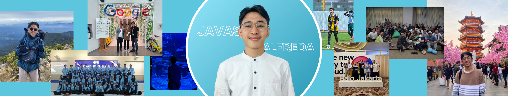

About Me
Hello! Assalamualaikum! I'm Javas, a highly skilled mathematician specializing in pure mathematics and analysis, with 4+ years of experience in data analyst and data governance. Proficient in project management, business analysis, operations research, adept at analytical thinking, artificial intelligence development, and creative problem-solving. Possesses expertise in initiating and coordinating organizational affairs and effective communication skills with cross-functional teams.
Proficient in various tools, including Excel, Spreadsheets, SQL, BigQuery, Python, Docker, Tableau, Looker, Snowflake, Redash, etc. Have experience in operating GCP with a background in statistical projects, natural language processing (NLP), forecasting, machine learning, database management, data integration (ETL processes), predictive analysis, cloud technologies, data governance, and data security.
Core Skills
Database Management
SQL (MySQL, PostgreSQL), MongoDB, BigQuery, Snowflake, Redash, Airflow, Oracle.
Data Manipulation
Excel, Spreadsheet, Python, R, SPSS, Minitab.
Data Visualization
Looker & Looker Studio, Tableau, Power BI, Metabase, Snowsight, Streamlit.
Other Tools
Visual Studio Code, GitLab, GitHub, Pub/Sub, Docker, GCP, AWS, PowerPoint, Google Slides, Archer, Confluence, Jira.
Analisis Statistik
EDA, Pengujian Hipotesis, Regresi
Personal Interests
Outside of work, I enjoy playing football, basketball, volleyball, swimming, chess, hiking, and several other sports (I pretty much enjoy almost all sports). I'm also interested in photography, traveling, and reading about history, general science, and global developments.
Work Experience
LinkAja
Senior Product Analytics
(Jun 2024 - present)
More...My Responsibilities:
1. Data Governance:
- Understand and implement GDPR, UU Perlindungan Data Pribadi (PDP), and ISO 27001 within the company's activities.
- Develop multiple Standard Operating Procedures (SOPs) and documentation related to data governance.
- Provide and review access to GCP, Snowflake, Redash, and Looker for users based on their needs and in compliance with applicable standard procedures.
2. Product Analytics:
- Support end-to-end product development by assisting in defining metrics set by the Product team.
- Identify trends, patterns, and anomalies in data.
- Develop automation systems to reduce manual processes for various projects.
- Create monitoring dashboards for multiple products.
- Conduct assessments of services before inserting them into BigQuery and ensure data availability.
- Build data warehouses and/or datamarts based on the team's needs.
- Identify insights and provide recommendations required by the team.
Skills: Python (Programming Language) 路 Google BigQuery 路 Looker (Software) 路 Redash 路 Google Cloud Platform (GCP) 路 Data Analysis 路 Data Governance 路 Snowflake
PT Bukalapak.com Tbk
Business Assurance - Data Analytics
(Jan 2022 - Jun 2024)
More...My Responsibilities:
1. Evaluate Compliance:
- Ensure that companies comply with all relevant rules and policies related to technology and information security, including compliance with industry standards, government regulations, and internal company policies.
2. Identify Risks:
- Identify potential risks related to information and technology security that could occur in company operations, including risks such as data breaches, cyber attacks, loss of sensitive information, and others.
3. Provide Recommendations:
- Offer recommendations for security improvement and compliance enhancement, involving drafting recommendations to address findings from audits and fixing weaknesses in information technology systems and processes.
4. Provide Training & Education:
- Provide training and education to employees on best practices in the use of information technology, cyber security, and compliance with company policies.
5. Incident Response:
- Respond to and manage information security incidents that occur, such as cyber attacks, data theft, or other security breaches, involving investigation, system recovery, and implementation of further prevention measures, including conducting Disaster Recovery (DR) Testing, Backup & Restore Testing, etc.
6. Communication:
- Assist in personal data audits, personal data mapping, and annual tech risk assessments within the company.
- Collaborate effectively with 30+ tribes and 15+ business units at Bukalapak Holding Company.
Sekolah.mu
Data Analyst Mentor
(Feb 2024 - Dec 2024)
More...My Responsibilities:
- Teach and assist mentees based on the curriculum such as: Fundamentals of Data Analysis, Spreadsheets, SQL, Python, Tableau, and Basic Machine Learning.
Bangkit Academy
Machine Learning Instructor & Mentor
(Feb 2022 - Jul 2022 and Jul 2023 - Apr 2024)
More...My Responsibilities:
- Teach and assist mentees based on the curriculum such as: Python & GitHub, Deep Dive Into Data Analyst, Python IT Automation, Machine Learning (Supervised and Unsupervised Learning), TensorFlow, etc.
Rumah Kepemimpinan
CRM Data Analyst
(Apr 2021 - Jan 2022)
More...My Responsibilities:
- Determine and analyze target markets and provide advice based on previously processed data.
- Create customer classifications to determine the appropriate products for each customer.
- Collaborate with the marketing team to optimize product sales.
- Collaborate with all relevant teams to expand the acquisition of potential customer data.
- Improve data quality and address potential data issues.
- Maintain and manage all of the company's databases.
- Report the processed results to stakeholders using Google Slides or Looker Studio.
Organizational Experience
KonCreate.id
Head of Educational Division
(Mar 2023 - present)
More...My Responsibilities:
- Leading the education division and designing learning programs, such as Kampung Ramadhan, IYLS, KonCreate Speech, etc.
- Managing the team and coordinating with other divisions.
- Being responsible for the quality of educational materials.
Data Science Indonesia
Community Development Division
(May 2023 - present)
Research Division
(May 2021 - Oct 2022)
More...My Responsibilities:
- Reactivate members to ensure they remain engaged with DSI.
- Build relationships and maintain interactions with members to keep them connected to DSI.
- Organize various events (training and information) such as Kopi Darat, Melek for Member, DSI MeetUp, and more.
- Analyze issues occurring in Indonesia, then obtained existing data to process and derive conclusions and solutions for these problems by creating machine learning models.
- Organize various events such as Kopi Darat, Melek for Member, DSI MeetUp, and more.
Nol Koma
Co-Founder and COO
(Feb 2021 - Apr 2022)
More...My Responsibilities:
- Create a grand design, made decisions and policies, and led all the company data sections.
- Create a new program and made an evaluation.
- Manage company operations.
Keluarga Alumni FMIPA UNS
Executive Secretariat
(Sep 2020 - Apr 2021)
More...My Responsibilities:
- Managing the organization’s administration and secretariat.
- Assisting coordination between the board and alumni.
- Organizing alumni activities.
BEM FMIPA UNS
President
(Dec 2019 - Jan 2021)
More...My Responsibilities:
- Lead and manage the organization.
- Create programs for the benefit of students in the Faculty of Mathematics and Natural Sciences.
- Collaborate with other organizations/institutions to make a positive impact on the surrounding community.
Education
Digital Talent Scholarship
Big Data Using Python
(Jul 2021 - Sep 2021)
More...- The competency development training program, led by the Ministry of Communication and Information, focuses especially on Python learning for the applications of big data, machine learning, the internet of things, and cybersecurity.
- Project: Create machine learning models to detect COVID-19 using X-ray images.
Bangkit Academy
Machine Learning
(Feb 2021 - Jul 2021)
More...- Education programs led by Google, GoTo, and Traveloka, focus on the development of AI and machine learning specializations. Some of the topics taught include IT Automation with Python, Mathematics for Machine Learning, Deep Learning AI TensorFlow, Data and Deployment Specialization, Structuring Machine Learning Projects, Deep Dive Into Data Analyst, and others.
- Project: Build apps with a machine learning model to detect spoiled and fresh fruits.
Universitas Sebelas Maret
Bachelor of Mathematics
(Sep 2017 - Feb 2021)
More...- GPA 3.40/4.00 within 3.5 years.
- Assistant Lecturer in 5 courses.